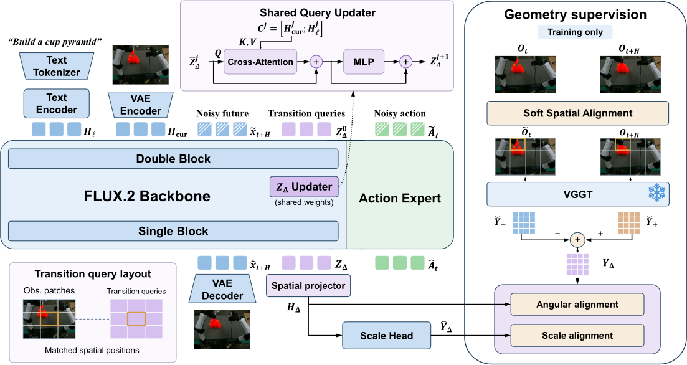

Align
Warp current and future observations onto corresponding image locations.
World Action Models · 3D Transition Learning
Learning Spatial Foresight for Robotic Manipulation
* Equal contribution · † Corresponding authors
We distill correspondence-aligned changes in a pretrained 3D feature space into spatial transition queries that directly condition action generation—without future observations or the 3D teacher at deployment.
The key insight
Future RGB prediction mixes task-relevant motion with appearance, background, and viewpoint. Foresight Forcing isolates a denser learning signal: how aligned 3D teacher features change from the current observation to the action horizon.
Warp current and future observations onto corresponding image locations.
Subtract frozen VGGT patch features to form spatial transition targets.
Predict transition queries from the current inputs and route them to the Action Expert.

How it works
The transition pathway is trained with future observations, but must predict from current observations, language, and proprioception at deployment.
A frozen VGGT produces patch features for aligned current and future observations. Their difference supervises the direction and scale of spatial change.
Each query occupies a visual token location. A shared updater repeatedly reads current visual and conditioning states while remaining isolated from future tokens.
The Action Expert attends to predicted transition queries and current visual features. Future observations, VGGT, and distillation heads are removed.

Inside the representation
Readouts show correspondence with teacher feature changes and recover future image-space displacement from frozen transition queries.
Predicted response maps recover the same task-relevant regions as the aligned VGGT target, including the moving arm and interaction geometry.
A probe trained on frozen queries predicts future image-space displacement near the observed future, while ImageWAM provides a weaker spatial readout.
Simulation benchmarks
Success rate (%). Select a benchmark to inspect the reported comparison.
RoboTwin 2.0 Full · Average
95.01% 50 dual-arm tasks, clean and randomized evaluationControlled analysis
On LIBERO-Plus, delta supervision reaches 84.5%, compared with 83.2% for current features, 81.2% for future features, and 82.3% without distillation.
Physical manipulation
Foresight Forcing is evaluated over 15 trials per task on long-horizon bimanual manipulation spanning rigid objects, articulated tools, deformable cloth, and sequential placement.
Bimanual pyramid cup stacking requiring precise vertical alignment and contact-rich placement (full-task completion).
Quantitative breakdown
| Task | Metric | π0.5 (Pretrained) | ImageWAM | F2 (Ours) | Δ vs ImageWAM |
|---|---|---|---|---|---|
| Cup stacking | Full completion | 73.0% | 67.0% | 93.0% | +26.0% |
| Towel folding | Full completion | 100.0% | 87.0% | 100.0% | +13.0% |
| Egg transfer | Full completion | 80.0% | 73.0% | 80.0% | +7.0% |
| Breakfast preparation | Full completion | 87.0% | 73.0% | 80.0% | +7.0% |
| Tool stowing* | Item-level (4 tools) | 63.3% | 31.7% | 65.0% | +33.3% |
| Size sorting* | Item-level (15 blocks) | 97.7% | 89.3% | 96.2% | +6.9% |
| Unweighted mean | 6 tasks | 83.5% | 70.2% | 85.8% | +15.6% |
* Item-level evaluation. F2 is trained jointly across all six tasks without large-scale robot pretraining, yet matches or exceeds pretrained π0.5 on 4 of 6 tasks and outperforms ImageWAM by +15.6% on average.
Inference efficiency
VGGT and the future observation are discarded at inference. Only the learned transition-query pathway remains.
Median latency per 16-action chunk · H200 · BF16 · 10 denoising steps
Citation
Preprint · arXiv identifier forthcoming.
@article{foresightforcing2026,
title = {Foresight Forcing: Learning Spatial Foresight
for Robotic Manipulation},
author = {Han, Mishuo and Liang, Zhixuan and Wan, Zhaoyuan and
Chen, Wendi and Chen, Jiarui and Wang, Xinkai and
Ma, Yue and Zhou, Yu and Chen, Junting and Mu, Yao and
Lv, Jun and Wen, Chuan and Lu, Cewu},
journal = {arXiv preprint},
year = {2026}
}